| 日付 | 2021年7月22日（木） - 2021年7月25日（日） | ||
|---|---|---|---|
| 山域 | 伊豆 | ||
| メンバー | 家族（妻、長女・10歳、長男・8歳） | ||
| 山行形態 | 子連れ3泊4日旅館泊 | ||
| アクセス | 車 | ||
| ルート (Map) |
|
今年の海の日連休は伊豆に行ってみることにする。
毎年、梅雨明けしているかどうか微妙な時期のため、
できるだけ南に向かおうという計画だ。
この機会に有名なヒリゾ浜に行ってみようという計画と
久々に山も登ろうという計画を立てて、伊豆に向かう。
1日目
初日はまず山に登る。仁科峠に車を停める。標高900m。

仁科峠の立派な石柱がある。
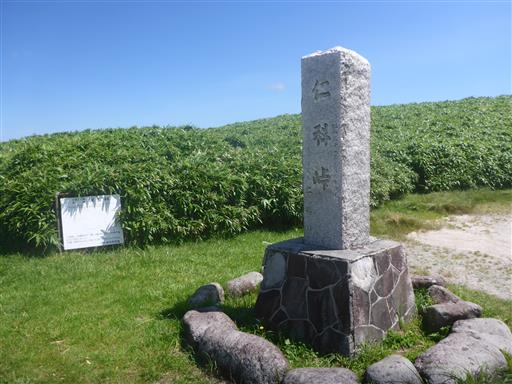
山に登る前から素晴らしい景色が広がる。
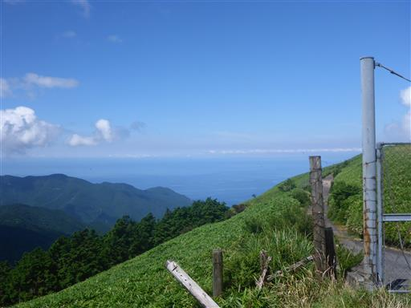
まずは北上して猫越岳を目指す。笹原の中の美しい道だ。
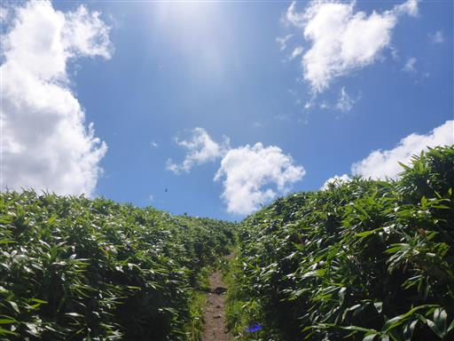
緩やかな斜面が広がっている。
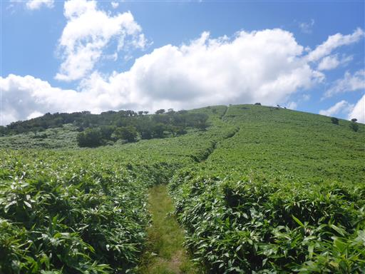
2ヶ月振りの山登り。ゆっくりと登る。
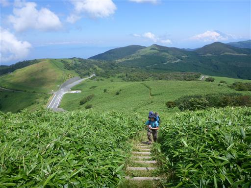
仁科峠展望台に到着。
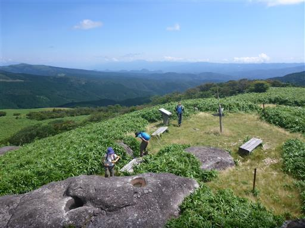
岩のくぼみにオタマジャクシが住んでいる。
側の小さなくぼみは干上がってしまいそうなので、こちらにオタマジャクシを移してあげる。
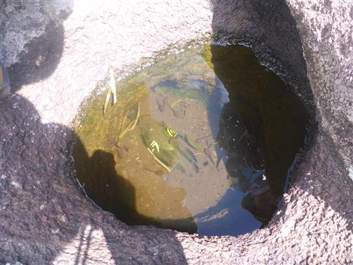
ここからは素晴らしい展望が広がる。眼下に見えているのは宇久須の町並だ。
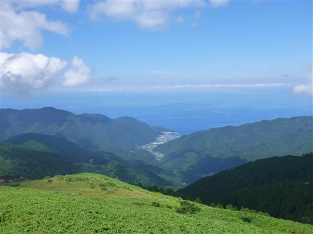
半分雲に隠れているが、富士山の姿も見えている。

猫越岳を目指して北上すると、牧場の中にある車道に到達する。
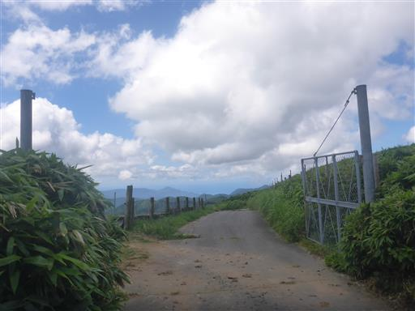
ここから先は藪が酷い。背丈よりも高い笹と草が生い茂っている。
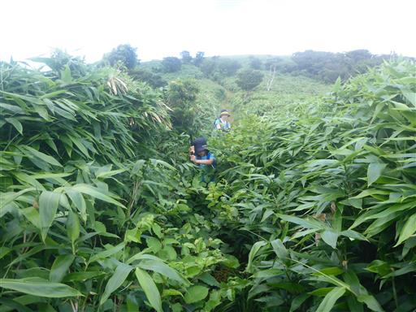
このまま藪が続けば撤退も考えたが、少し歩くと藪がなくなる。
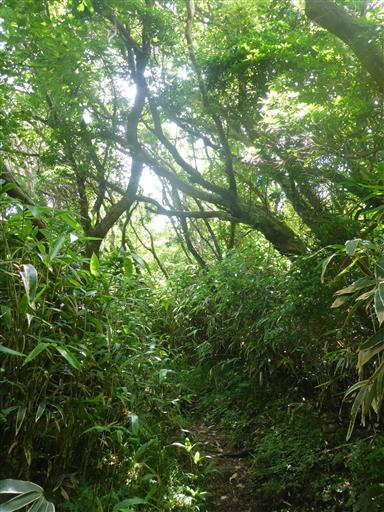
伊豆の山らしい美しい樹林帯になる。
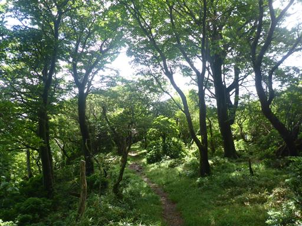
倒木。色んな木が絡まっている。
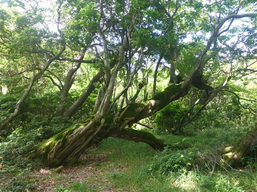
ぽっかりと木のない空間に出てくる。
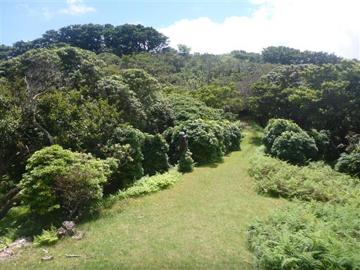
再び樹林帯の中へ。うねうねと生えているのは何の木だろう？
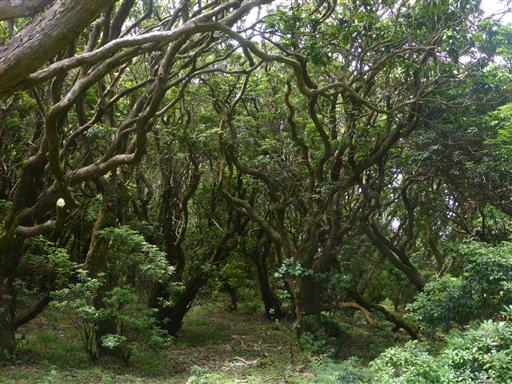
立派な大木。この辺りは大きな木が多い。
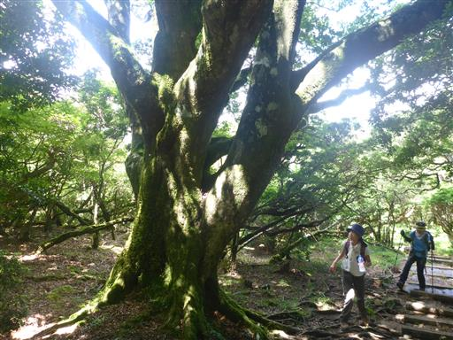
展望の良いベンチに到着。
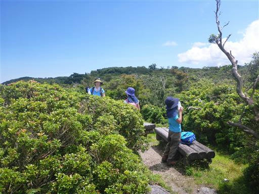
遠くに見えるのは達磨山方面だろうか。
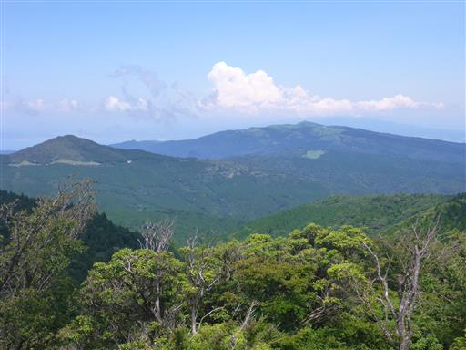
目指す猫越岳の山頂と思われる場所が姿を現す。
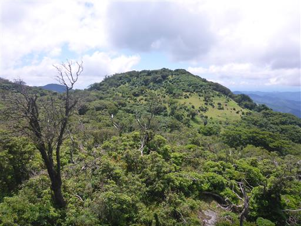
猫越岳山頂の池の標識があったため、立ち寄ることにする。
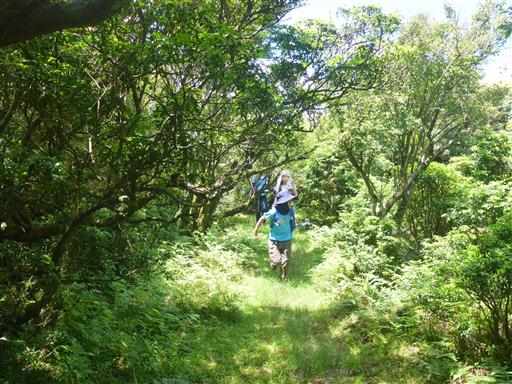
猫越岳山頂の池に到着。
そこそこ立派な池で、もう少しちゃんとした名前を付けてあげればと思うのだが…
かつては火口湖と考えられていたが、今では溶岩が作ったなだらかな斜面にできた池とされている。
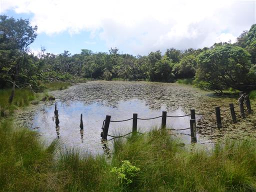
池に立ち入れないよう柵があるが、池は柵よりも広がっている。
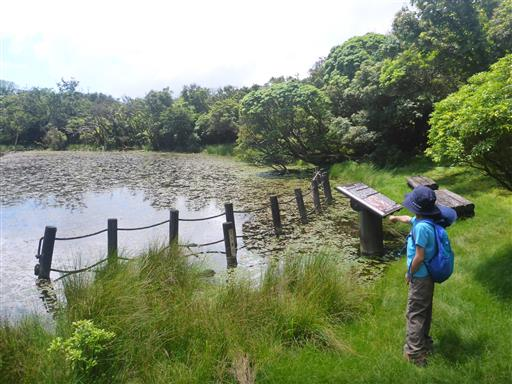
ヤゴの抜け殻をゲット。あちらこちらの杭にこの抜け殻がくっついている。
かなりの大きさだが何トンボのヤゴだろう？
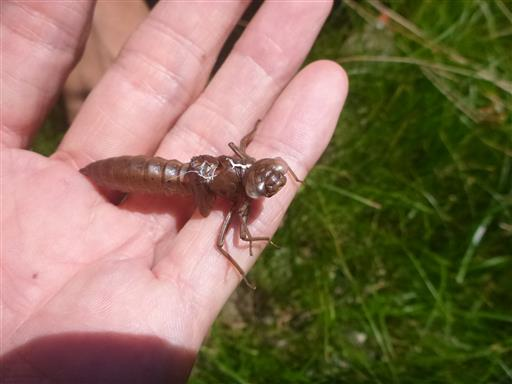
トンボがひらひらと飛んでいる。あのヤゴの抜け殻の主だろうか？
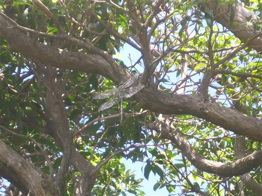
猫越岳山頂に到着する。標高1035m。
樹林帯に囲まれていて展望はない。
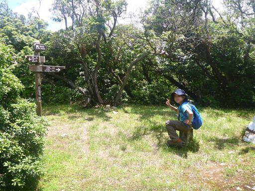
元来た道を帰る。森にこだまするセミの声。ようやくセミを写真に収めることに成功。
ヒグラシだろうか？小さくて透明の羽で発見は難しい。
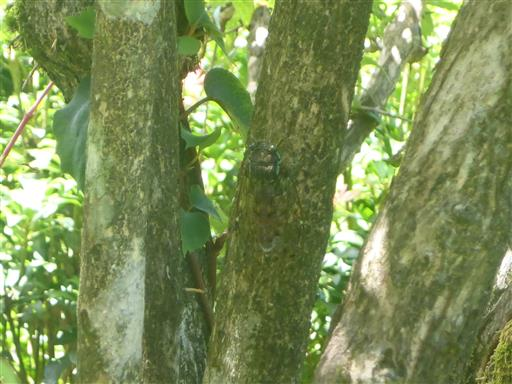
稜線の西側に雲が湧いている。
これからあちらに向かおうと思っていたが、残念ながら展望が半分隠されそうだ。
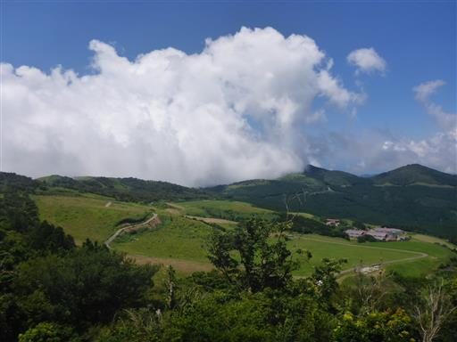
牧場に牛を発見。道路を歩いて草地に向かっている。
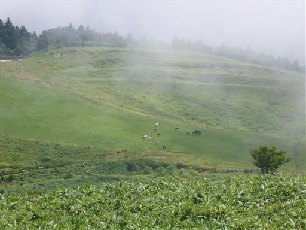
仁科峠に戻ってくる。今度はここから北上して魂の山を目指す。
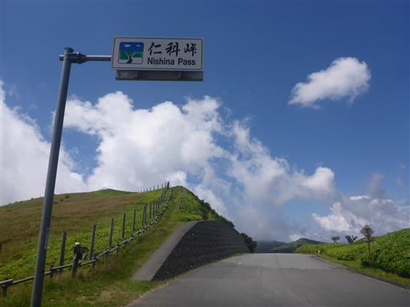
猫越岳は樹林帯の美しい道、こちらは展望の素晴らしい道だ。
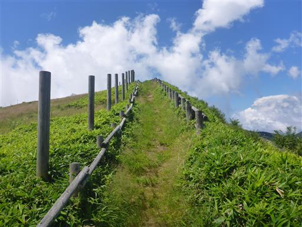
登山道のすぐ側に牧柵があるのがちょっと今一。
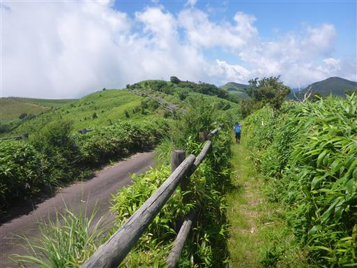
それでも笹原の素晴らしい展望が広がり、歩いていて気持ちが良い。
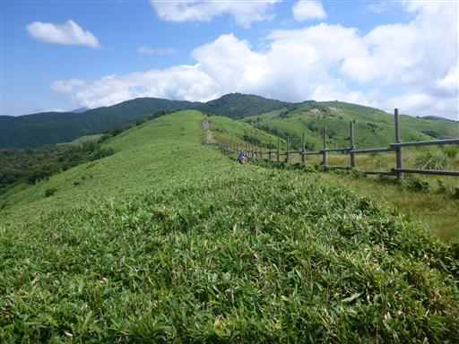
風早峠に到着。ここで息子が暑いと言って全く歩かなくなる。
息子の機嫌が悪いので、ここから先に進むのは止めて、引き返すことにする。
久々の登山だったのもあるが、何よりも8月の伊豆の山は暑かった。
それでも猫越岳の樹林帯は美しく、伊豆らしい風景を満喫することができた。
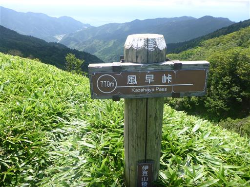
山が想定外に早く終わったため、浄蓮の滝に寄り道する。

階段を下って滝に向かう。

浄蓮の滝に到着。落差25m。伊豆を代表する観光地だ。
ここで魚釣りができるようで、体験してみようと思ったのだが、
魚を焼いて食べる時間は終わっており、持ち帰りになるようなので、
最終日の帰り道に再訪することにする。
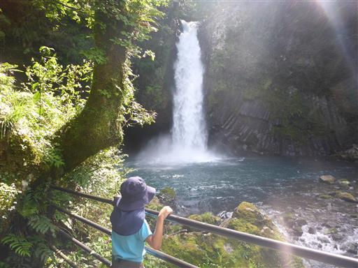
浄蓮の滝でソフトクリームを食べたら宿に向かう。
有名な河津七滝ループ橋を通過。720度ループする珍しい橋だ。
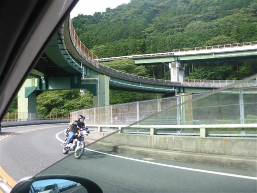
3泊お世話になる民宿坂下に到着。
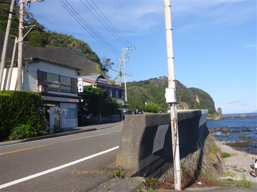
海のすぐそばの宿だ。
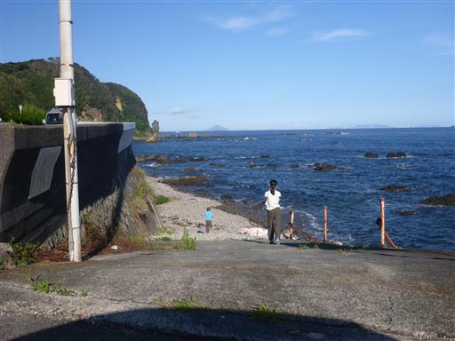
本日は満月に近い。
宿の前の海が月明かりに照らされて、きれいに光っている。
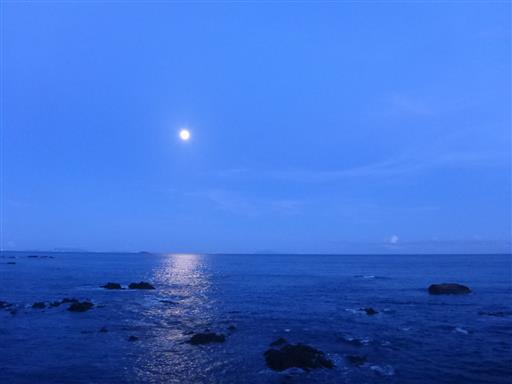